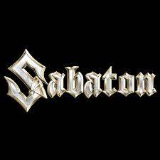
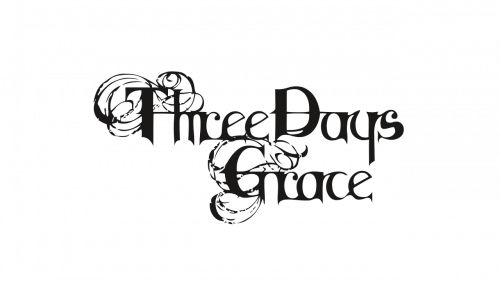
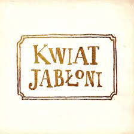

Uwielbiam słuchać muzyki.
Wcześniej za dużo spędzałem czasu z muzyką typu "metal" i "rock".
U siebie na ojczyźnie prawie codziennie słuchałem piosenki takich
zespołów jak:
W tym projekcie napiszę tylko o dwóch zespołach muzycznych: Sabaton i Three days grace.
Ponieważ mój najulubieńszy muzyk, Radio Tapok, śpiewa po rosyjsku, zdecydowałem się wybrać inne zespoły.
Odsłychaczy:
| Zespół | Avatar zespołu | Data założenia zespołu |
|---|---|---|
| Radio Tapok | 2016 | |
| Sabaton |  | 1999 |
| Three days grace |  | 1997 |
| Kwiat Jabłoni |  | 2018 |
| Rammstein | 1994 |